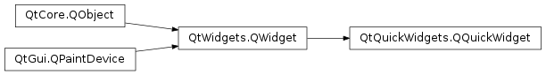

QQuickWidget¶
Synopsis¶
Functions¶
- def
engine() - def
errors() - def
format() - def
grabFramebuffer() - def
initialSize() - def
quickWindow() - def
resizeMode() - def
rootContext() - def
rootObject() - def
setClearColor(color) - def
setFormat(format) - def
setResizeMode(arg__1) - def
source() - def
status()
Slots¶
- def
setContent(url, component, item) - def
setSource(arg__1)
Signals¶
- def
sceneGraphError(error, message) - def
statusChanged(arg__1)
Detailed Description¶
The
PySide2.QtQuickWidgets.QQuickWidgetclass provides a widget for displaying a Qt Quick user interface.This is a convenience wrapper for
PySide2.QtQuick.QQuickWindowwhich will automatically load and display a QML scene when given the URL of the main source file. Alternatively, you can instantiate your own objects using QQmlComponent and place them in a manually set upPySide2.QtQuickWidgets.QQuickWidget.Typical usage:
QQuickWidget *view = new QQuickWidget; view->setSource(QUrl::fromLocalFile("myqmlfile.qml")); view->show();To receive errors related to loading and executing QML with
PySide2.QtQuickWidgets.QQuickWidget, you can connect to thePySide2.QtQuickWidgets.QQuickWidget.statusChanged()signal and monitor forQQuickWidget.Error. The errors are available viaQQuickWidget.errors().
PySide2.QtQuickWidgets.QQuickWidgetalso manages sizing of the view and root object. By default, thePySide2.QtQuickWidgets.QQuickWidget.resizeMode()isSizeViewToRootObject, which will load the component and resize it to the size of the view. Alternatively thePySide2.QtQuickWidgets.QQuickWidget.resizeMode()may be set toSizeRootObjectToViewwhich will resize the view to the size of the root object.Note
PySide2.QtQuickWidgets.QQuickWidgetis an alternative to usingPySide2.QtQuick.QQuickViewandQWidget.createWindowContainer(). The restrictions on stacking order do not apply, makingPySide2.QtQuickWidgets.QQuickWidgetthe more flexible alternative, behaving more like an ordinary widget. This comes at the expense of performance. UnlikePySide2.QtQuick.QQuickWindowandPySide2.QtQuick.QQuickView,PySide2.QtQuickWidgets.QQuickWidgetinvolves rendering into OpenGL framebuffer objects. This will naturally carry a minor performance hit.Note
Using
PySide2.QtQuickWidgets.QQuickWidgetdisables the threaded render loop on all platforms. This means that some of the benefits of threaded rendering, for example Animator classes and vsync driven animations, will not be available.Note
Avoid calling
PySide2.QtWidgets.QWidget.winId()on aPySide2.QtQuickWidgets.QQuickWidget. This function triggers the creation of a native window, resulting in reduced performance and possibly rendering glitches. The entire purpose ofPySide2.QtQuickWidgets.QQuickWidgetis to render Quick scenes without a separate native window, hence making it a native widget should always be avoided.
Scene Graph and Context Persistency¶
PySide2.QtQuickWidgets.QQuickWidgethonorsQQuickWindow.isPersistentSceneGraph(), meaning that applications can decide - by callingQQuickWindow.setPersistentSceneGraph()on the window returned from thePySide2.QtQuickWidgets.QQuickWidget.quickWindow()function - to let scenegraph nodes and other Qt Quick scene related resources be released whenever the widget becomes hidden. By default persistency is enabled, just like withPySide2.QtQuick.QQuickWindow.When running with the OpenGL backend of the scene graph,
PySide2.QtQuick.QQuickWindowoffers the possibility to disable persistent OpenGL contexts as well. This setting is currently ignored byPySide2.QtQuickWidgets.QQuickWidgetand the context is always persistent. The OpenGL context is thus not destroyed when hiding the widget. The context is destroyed only when the widget is destroyed or when the widget gets reparented into another top-level widget’s child hierarchy. However, some applications, in particular those that have their own graphics resources due to performing custom OpenGL rendering in the Qt Quick scene, may wish to disable the latter since they may not be prepared to handle the loss of the context when moving aPySide2.QtQuickWidgets.QQuickWidgetinto another window. Such applications can set the QCoreApplication::AA_ShareOpenGLContexts attribute. For a discussion on the details of resource initialization and cleanup, refer to thePySide2.QtWidgets.QOpenGLWidgetdocumentation.Note
PySide2.QtQuickWidgets.QQuickWidgetoffers less fine-grained control over its internal OpenGL context thanPySide2.QtWidgets.QOpenGLWidget, and there are subtle differences, most notably that disabling the persistent scene graph will lead to destroying the context on a window change regardless of the presence of QCoreApplication::AA_ShareOpenGLContexts.
Limitations¶
Putting other widgets underneath and making the
PySide2.QtQuickWidgets.QQuickWidgettransparent will not lead to the expected results: the widgets underneath will not be visible. This is because in practice thePySide2.QtQuickWidgets.QQuickWidgetis drawn before all other regular, non-OpenGL widgets, and so see-through types of solutions are not feasible. Other type of layouts, like having widgets on top of thePySide2.QtQuickWidgets.QQuickWidget, will function as expected.When absolutely necessary, this limitation can be overcome by setting the
Qt.WA_AlwaysStackOnTopattribute on thePySide2.QtQuickWidgets.QQuickWidget. Be aware, however that this breaks stacking order. For example it will not be possible to have other widgets on top of thePySide2.QtQuickWidgets.QQuickWidget, so it should only be used in situations where a semi-transparentPySide2.QtQuickWidgets.QQuickWidgetwith other widgets visible underneath is required.This limitation only applies when there are other widgets underneath the
PySide2.QtQuickWidgets.QQuickWidgetinside the same window. Making the window semi-transparent, with other applications and the desktop visible in the background, is done in the traditional way: SetQt.WA_TranslucentBackgroundon the top-level window, request an alpha channel, and change the Qt Quick Scenegraph’s clear color toQt.transparentviaPySide2.QtQuickWidgets.QQuickWidget.setClearColor().
Support when not using OpenGL¶
In addition to OpenGL, thesoftwarebackend of Qt Quick also supportsPySide2.QtQuickWidgets.QQuickWidget. Other backends, for example the Direct 3D 12 one, are not compatible however and attempting to construct aPySide2.QtQuickWidgets.QQuickWidgetwill lead to problems.
Tab Key Handling¶
On press of the
[TAB]key, the item inside thePySide2.QtQuickWidgets.QQuickWidgetgets focus. If this item can handle[TAB]key press, focus will change accordingly within the item, otherwise the next widget in the focus chain gets focus.See also
Qt Quick Widgets Example
PySide2.QtQuick.QQuickView
-
class
PySide2.QtQuickWidgets.QQuickWidget(engine, parent)¶ -
class
PySide2.QtQuickWidgets.QQuickWidget([parent=nullptr]) -
class
PySide2.QtQuickWidgets.QQuickWidget(source[, parent=nullptr]) Parameters: - source –
PySide2.QtCore.QUrl - engine –
PySide2.QtQml.QQmlEngine - parent –
PySide2.QtWidgets.QWidget
Constructs a
PySide2.QtQuickWidgets.QQuickWidgetwith the given QMLengineandparent.Note: In this case, the
PySide2.QtQuickWidgets.QQuickWidgetdoes not own the givenengineobject; it is the caller’s responsibility to destroy the engine. If theengineis deleted before the view,PySide2.QtQuickWidgets.QQuickWidget.status()will returnQQuickWidget.Error.See also
QQuickWidget.StatusPySide2.QtQuickWidgets.QQuickWidget.status()PySide2.QtQuickWidgets.QQuickWidget.errors()Constructs a
PySide2.QtQuickWidgets.QQuickWidgetwith the givenparent. The default value ofparentis 0.Constructs a
PySide2.QtQuickWidgets.QQuickWidgetwith the given QMLsourceandparent. The default value ofparentis 0.- source –
-
PySide2.QtQuickWidgets.QQuickWidget.ResizeMode¶ This enum specifies how to resize the view.
Constant Description QQuickWidget.SizeViewToRootObject The view resizes with the root item in the QML. QQuickWidget.SizeRootObjectToView The view will automatically resize the root item to the size of the view.
-
PySide2.QtQuickWidgets.QQuickWidget.Status¶ Specifies the loading status of the
PySide2.QtQuickWidgets.QQuickWidget.Constant Description QQuickWidget.Null This PySide2.QtQuickWidgets.QQuickWidgethas no source set.QQuickWidget.Ready This PySide2.QtQuickWidgets.QQuickWidgethas loaded and created the QML component.QQuickWidget.Loading This PySide2.QtQuickWidgets.QQuickWidgetis loading network data.QQuickWidget.Error One or more errors occurred. Call PySide2.QtQuickWidgets.QQuickWidget.errors()to retrieve a list of errors.
-
PySide2.QtQuickWidgets.QQuickWidget.engine()¶ Return type: PySide2.QtQml.QQmlEngineReturns a pointer to the QQmlEngine used for instantiating QML Components.
-
PySide2.QtQuickWidgets.QQuickWidget.errors()¶ Return type: Return the list of errors that occurred during the last compile or create operation. When the status is not
Error, an empty list is returned.
-
PySide2.QtQuickWidgets.QQuickWidget.format()¶ Return type: PySide2.QtGui.QSurfaceFormatReturns the actual surface format.
If the widget has not yet been shown, the requested format is returned.
-
PySide2.QtQuickWidgets.QQuickWidget.grabFramebuffer()¶ Return type: PySide2.QtGui.QImageRenders a frame and reads it back into an image.
Note
This is a potentially expensive operation.
-
PySide2.QtQuickWidgets.QQuickWidget.initialSize()¶ Return type: PySide2.QtCore.QSizeReturns the initial size of the root object.
If
PySide2.QtQuickWidgets.QQuickWidget.resizeMode()isSizeRootObjectToView, the root object will be resized to the size of the view. This function returns the size of the root object before it was resized.
-
PySide2.QtQuickWidgets.QQuickWidget.quickWindow()¶ Return type: PySide2.QtQuick.QQuickWindowReturns the offscreen
PySide2.QtQuick.QQuickWindowwhich is used by this widget to drive the Qt Quick rendering. This is useful if you want to usePySide2.QtQuick.QQuickWindowAPIs that are not currently exposed byPySide2.QtQuickWidgets.QQuickWidget, for instance connecting to theQQuickWindow.beforeRendering()signal in order to draw native OpenGL content below Qt Quick’s own rendering.Warning
Use the return value of this function with caution. In particular, do not ever attempt to show the
PySide2.QtQuick.QQuickWindow, and be very careful when using otherPySide2.QtGui.QWindow-only APIs.
-
PySide2.QtQuickWidgets.QQuickWidget.resizeMode()¶ Return type: PySide2.QtQuickWidgets.QQuickWidget.ResizeMode
-
PySide2.QtQuickWidgets.QQuickWidget.rootContext()¶ Return type: PySide2.QtQml.QQmlContextThis function returns the root of the context hierarchy. Each QML component is instantiated in a QQmlContext. QQmlContext’s are essential for passing data to QML components. In QML, contexts are arranged hierarchically and this hierarchy is managed by the QQmlEngine.
-
PySide2.QtQuickWidgets.QQuickWidget.rootObject()¶ Return type: PySide2.QtQuick.QQuickItemReturns the view’s root
item. Can be null whenPySide2.QtQuickWidgets.QQuickWidget.setSource()has not been called, if it was called with broken QtQuick code or while the QtQuick contents are being created.
-
PySide2.QtQuickWidgets.QQuickWidget.sceneGraphError(error, message)¶ Parameters: - error –
PySide2.QtQuick.QQuickWindow.SceneGraphError - message – unicode
- error –
-
PySide2.QtQuickWidgets.QQuickWidget.setClearColor(color)¶ Parameters: color – PySide2.QtGui.QColorSets the clear
color. By default this is an opaque color.To get a semi-transparent
PySide2.QtQuickWidgets.QQuickWidget, call this function withcolorset toQt.transparent, set theQt.WA_TranslucentBackgroundwidget attribute on the top-level window, and request an alpha channel viaPySide2.QtQuickWidgets.QQuickWidget.setFormat().See also
QQuickWindow.setColor()
-
PySide2.QtQuickWidgets.QQuickWidget.setContent(url, component, item)¶ Parameters: - url –
PySide2.QtCore.QUrl - component –
PySide2.QtQml.QQmlComponent - item –
PySide2.QtCore.QObject
Sets the source
url,componentand contentitem(root of the QML object hierarchy) directly.- url –
-
PySide2.QtQuickWidgets.QQuickWidget.setFormat(format)¶ Parameters: format – PySide2.QtGui.QSurfaceFormatSets the surface
formatfor the context and offscreen surface used by this widget.Call this function when there is a need to request a context for a given OpenGL version or profile. The sizes for depth, stencil and alpha buffers are taken care of automatically and there is no need to request those explicitly.
See also
QWindow.setFormat()QWindow.format()PySide2.QtQuickWidgets.QQuickWidget.format()
-
PySide2.QtQuickWidgets.QQuickWidget.setResizeMode(arg__1)¶ Parameters: arg__1 – PySide2.QtQuickWidgets.QQuickWidget.ResizeMode
-
PySide2.QtQuickWidgets.QQuickWidget.setSource(arg__1)¶ Parameters: arg__1 – PySide2.QtCore.QUrlSets the source to the
url, loads the QML component and instantiates it.Ensure that the URL provided is full and correct, in particular, use
QUrl.fromLocalFile()when loading a file from the local filesystem.Calling this method multiple times with the same URL will result in the QML component being reinstantiated.
-
PySide2.QtQuickWidgets.QQuickWidget.source()¶ Return type: PySide2.QtCore.QUrlReturns the source URL, if set.
-
PySide2.QtQuickWidgets.QQuickWidget.status()¶ Return type: PySide2.QtQuickWidgets.QQuickWidget.Status
-
PySide2.QtQuickWidgets.QQuickWidget.statusChanged(arg__1)¶ Parameters: arg__1 – PySide2.QtQuickWidgets.QQuickWidget.Status
© 2018 The Qt Company Ltd. Documentation contributions included herein are the copyrights of their respective owners. The documentation provided herein is licensed under the terms of the GNU Free Documentation License version 1.3 as published by the Free Software Foundation. Qt and respective logos are trademarks of The Qt Company Ltd. in Finland and/or other countries worldwide. All other trademarks are property of their respective owners.